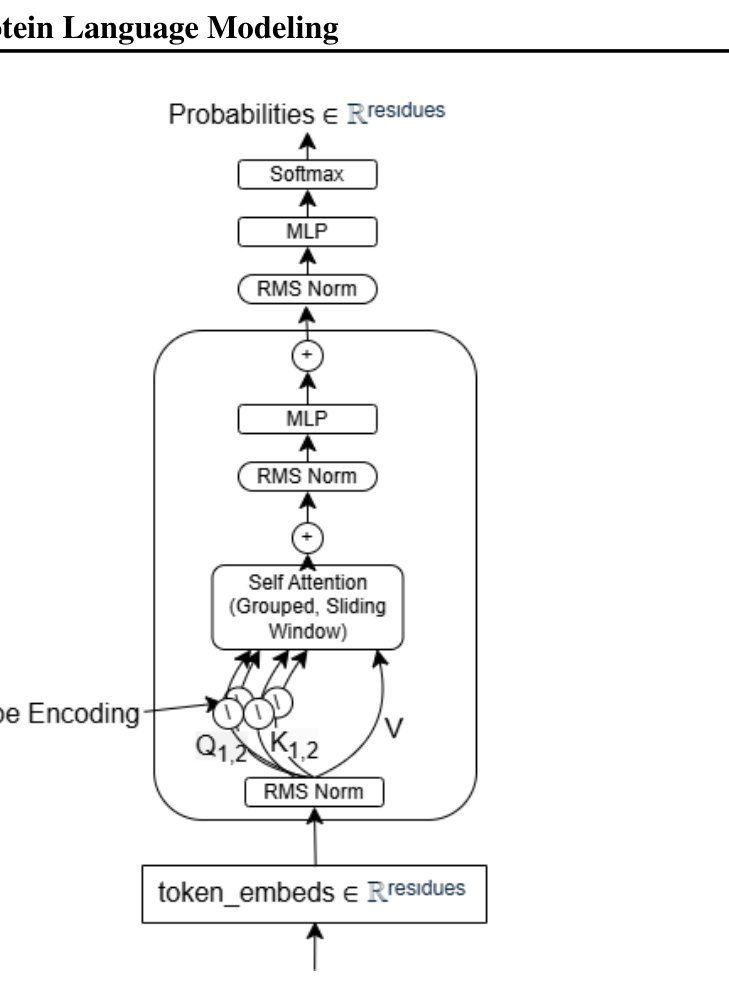
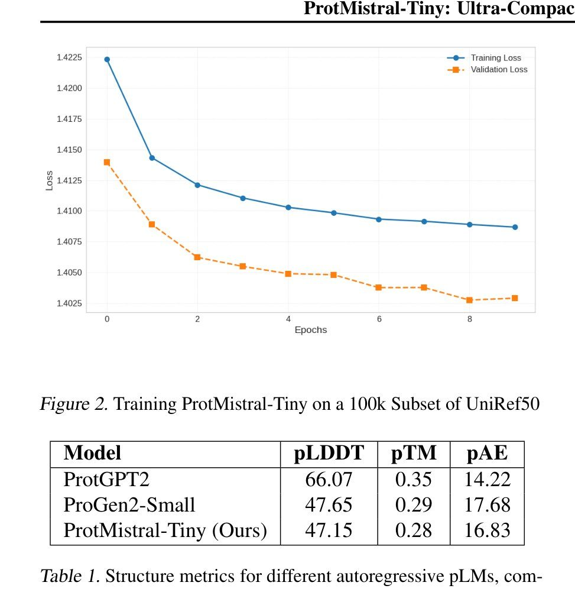
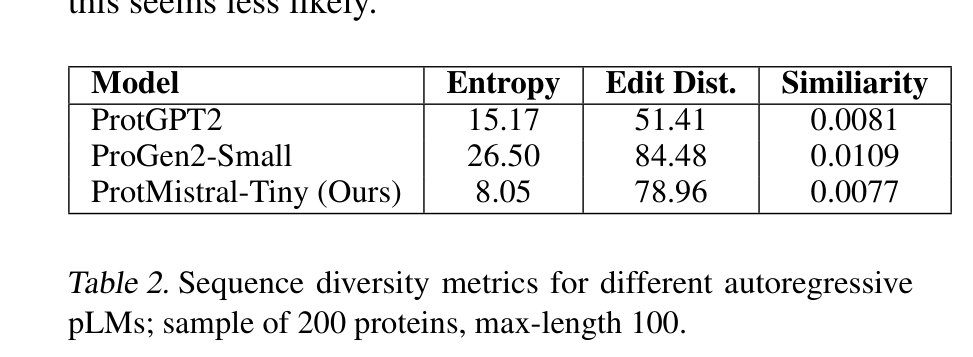

Home Featured work Protein language models
02 · Applied AI · Evaluation
A tiny protein model that matched a much bigger one
Two projects from Duke’s AI in Biomedical Engineering course. In the first we trained a very small protein language model and it matched a baseline about ten thousand times its size. In the second, fine-tuning made the headline metric worse and the thing we actually wanted better. The second result is the one I still think about.
- Timeline
- Jan – May 2025
- Context
- BME590 AI in BME, Duke
- Team
- 9 authors across four papers
- My focus
- Evaluation suite and ESM-2 fine-tuning
- Tools
- PyTorch, HuggingFace, Mistral, ESM-2, AlphaFold scoring, UniRef50, 1× A100
- Headline outcome
- ProtMistral-Tiny scored a pLDDT of 47.15 against ProGen2-Small's 47.65 while being about 10,000× smaller, trained in 3 GPU hours. Separately, dense-label fine-tuning dropped thermostability R² from 0.41 to 0.28 while lifting top-3 sampled pLDDT from 48 to 79.
The problem
Protein language models follow the same logic as text models: more parameters, more compute, better generations. ProtGPT2 has 774 million parameters. ProGen2-Small has 151 million. Both are real tools and both are expensive to train and to run.
The question we wanted to ask was not whether we could beat them, because we could not. It was how much of their competence comes from scale and how much comes from the structure of protein sequence data itself. That matters practically: if a small model gets most of the way there, a lab without a GPU cluster can iterate on protein design rather than waiting in a queue.
Why it is hard
Evaluating a generative protein model is genuinely awkward. You cannot just check accuracy, because there is no single right answer for "generate a protein." The field leans on structural scores, folding the generated sequence and asking whether the prediction is confident, which is a proxy for whether the sequence is physically plausible.
The failure mode that proxy hides is memorization. A model can score beautifully by reproducing common motifs it saw in training, which is not design, it is recall. So structure alone is not enough. You need diversity measured alongside it, and you need both at the sampling settings people actually use rather than at the single most-likely output.
What we built
ProtMistral-Tiny is a Mistral-architecture autoregressive model with 15,000 parameters, trained from scratch on a filtered subset of UniRef50 with residue-level tokenization.
The architecture choices were all in service of a very small compute budget without crippling the model on long proteins. Sliding window attention keeps token complexity linear rather than quadratic, which combined with the tiny parameter count left most of the GPU memory free for data, so we could train on large proteins instead of filtering them out. We dropped sequences over 10,000 amino acids, which removed 2,790 out of 59 million training sequences. Grouped query attention recycles a deeper model out of fewer parameters.
Total training: a single A100 for three hours.

Results
We benchmarked generated sequences by folding them and scoring structure, on a sample of 200 proteins at a maximum length of 100.

Matching ProGen2-Small on structural plausibility is the headline. The sequence diversity numbers are where it got strange.

Low local diversity with high global diversity is an unusual combination. It means the model is not memorizing motifs and replaying them, and it is also not improvising wildly at each position. Our reading was that limited capacity forces something close to a Markov process: the model lays the next stretch of track in front of itself without planning far ahead. The generated proteins were smaller than the sliding window and shared tokenization with ProGen2, so neither a locality bonus nor the tokenizer explains the structural scores. Something about the Mistral architecture's data efficiency does.
The second project, and why it matters more
In the final project we went the other direction: take ESM-2, an established model, and fine-tune it with dense distribution labels from deep mutational scanning data instead of the usual one-hot targets. The intuition is that a real protein position is not "this one amino acid is correct and all others equally wrong." Some substitutions are nearly as fit as the wild type, and dense labels encode that.
To check whether the fine-tuned embeddings actually captured protein properties, we trained a single-layer MLP regressor on a curated meltome dataset (53,363 train, 12,794 validation, 3,120 test sequences) to predict melting temperature as a stand-in for thermostability.
The headline metric got worse. Control ESM-2 reached an R² of 0.41. Our dense-label runs landed between 0.19 and 0.38, with the mid-weighted run at 0.28. On the metric we had set up to judge ourselves by, we had made the model worse.
But we had also built a second evaluation: generative sampling quality as a function of top-k, scored on structure and diversity together. There the picture inverted.
- At top-1, every model looks fine. All of them put a plausible protein at the argmax. The metric cannot separate anything.
- At top-3, baseline ESM-2 collapsed to a pLDDT of 48.10. The dense-label model held at 78.72.
- It did that while being more diverse, not less: Shannon entropy 0.46 against 0.35, k-mer diversity 0.45 against 0.28.
So dense labels had not made the model worse. They had made its probability distribution better calibrated away from the peak. If you only ever take the top prediction, that is invisible. If you are using the model to explore candidate sequences, which is the actual job in protein design, it is the entire point.
One number said the fine-tuning failed. A second number, measured at a sampling depth anyone would actually use, said it worked.
What I did
My focus across these projects was the evaluation side and the ESM-2 fine-tuning: the structural metrics (pLDDT, pTM, pAE), the diversity metrics (Shannon entropy, edit distance, k-mer and Jaccard overlap), and running the fine-tuning sweep over label weighting and weight decay.
On attribution
These were course projects with nine authors and the papers do not include per-author contribution statements, so I want to be precise rather than generous with myself. The architecture work on ProtMistral-Tiny was not mine. The evaluation design and the fine-tuning runs are the parts I can speak to in depth, and the top-k finding came out of the evaluation suite rather than out of the model.
What did not work
Several things, and they are worth naming because the result above is easy to over-read.
- We did not beat the large models. ProtGPT2 is well ahead on every structural metric. "Comparable to ProGen2-Small" is the real claim and the only one I make.
- The dense-label comparison is one control against one randomly selected fine-tuned run. No sweep with confidence intervals, no repeated seeds. I would not publish it as a finding. I would absolutely use it as a reason to look harder.
- The thermostability regression is a weak proxy. Melting temperature correlates with stability but a one-layer MLP on frozen embeddings is a blunt probe, and some of that R² gap may be probe capacity rather than embedding quality.
- Four papers in one semester is not a research program. One of the companion papers even carries an ICLR conference template header, which is the template's default text and not a publication. These are coursework and I describe them that way.
What I learned
This is the project I bring up when someone asks what I think evaluation is for. A single headline metric is not a measurement, it is a choice about what you are willing to notice. The thermostability R² was a perfectly reasonable thing to track, and tracking only it would have led us to discard a method that was doing exactly what we built it to do.
The habit I kept: when I set up a metric, I try to write the second metric that could embarrass it, and I try to evaluate at the operating point the thing will actually be used at rather than the one that is cheapest to compute.
That transfers directly out of protein models. A care-gap model that scores well on AUC and only ever gets evaluated at its argmax has the same blind spot. So does a deployment measured on go-live date rather than on whether anyone was still using it in week six.
What I would do next
- Run the sweep properly. Multiple seeds, confidence intervals, and the full label-weight grid against the top-k curve rather than one representative run.
- Test whether the calibration gain survives a harder probe. If a stronger regressor closes the thermostability gap, the tradeoff was partly an artifact of probe capacity, which would change the conclusion.
- Check the Markov hypothesis directly. We inferred stepwise generation from the entropy and edit-distance pattern. Measuring the model's effective context length would test it rather than reasoning backwards from diversity metrics.
- Scale the tiny model until it breaks. 15,000 parameters was a constraint we picked, not a discovered optimum. The curve between 15k and 151M is where the actual finding is.